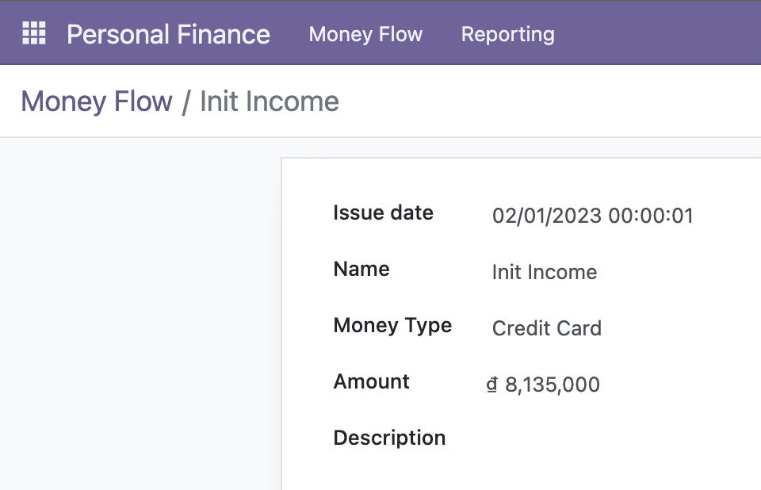

Keep an eye on your income or outcome money
See easily the purpose of each income or outcome money ...
Negative Amount -> Outcome Amount (spending amount)
Positive Amount -> Income Amount


See easily the purpose of each income or outcome money ...
Negative Amount -> Outcome Amount (spending amount)
Positive Amount -> Income Amount
You just enter:
- Name
- Amount (negative number if spending)
- Date
- Money type cash or credit card
- Description for more details
Review and Analysis your money flow
Support report types: pivot, graph and list
Need help with the configuration or want this module to have more functionalities?
Please create a bug report on the Github issue tracker